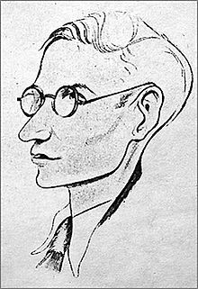
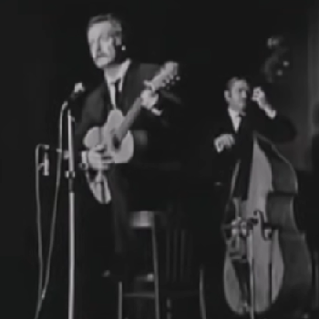
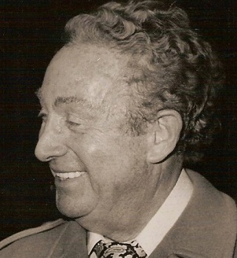

Bécassine
Georges Brassens (1957)
|
|
|
(1) La soi-disant dédicace absente Selon le site www. Analysebrassens.com cette chanson se rapporterait à un frère en anarchisme de Georges Brassens, le poète et écrivain breton Armand Robin (1912-1961, « Robin » est l’un des synonymes de « paysan » utilisés dans ce chant (str. 2), avec inversion du sexe. Il est peu probable cependant que Brassens ait emprunté ce procédé au poète Jacobite Alexandre McDonald ! Le choix du personnage de Bécassine serait une allusion à la naïveté de ce remarquable poète qui possédait, outre le breton et le français, une vingtaine de langues et nous légua des traductions d’une centaine de maîtres de la littérature universelle, mais refusa toujours toute compromission, s’interdisant ainsi de faire carrière. On doit à la Société des Amis d’Armand Robin, puis à Madame Françoise Morvan d’avoir publié ce qui put être sauvé des écrits de cet auteur inclassable. Si l’on accepte l’idée que le personnage dépeint dans la chanson est un homme, on peut aussi penser, pour les motifs évoqués ci-après, à Charles Trenet, que Brassens considérait comme son maître. (2) Bécassine et la sardane La plus célèbre des émigrées bretonnes, bien qu'elle porte un costume picard, est certainement Annaïck Labornez, alias Bécassine. C'était la bonne de Jaqueline Rivière, rédactrice en chef de "La Semaine de Suzette", qui y fit son entrée, le 2 février 1905, grâce au talent du dessinateur Joseph Pinchon (1871-1953). A partir de 1913, ses aventures deviennent des histoires bien structurées qui sont l'œuvre de Maurice Languereau (1867 - 1941), alias Caumery. Présentée comme "une bonne bretonne brave mais naïve", ce personnage fut et reste généralement mal perçu par les Bretons. Brassens achève de brouiller les cartes en donnant à sa mélodie un rythme de pas courts de la sardane, danse propre à la Catalogne des deux côtés des Pyrénées. Je tendrais à y voir un hommage à Charles Trenet (1913-2001) qui composa une chanson « La jolie Sardane » en 1952, qui utilise bien entendu le même rythme. Charles Trenet avait lui aussi les cheveux blonds. Et il est l’auteur d’une chanson peut-être visée dans le texte : « Fleur Bleue ». (3) La Chanson des Blés d'Or Paroles de Camille Soubise et L. Le Maître, musique de Frédéric Doria. 1882, éditeur Bassereau. Interprété par Marius Richard à la Scala. Elle fut enregistrée par Armand Mestral (1957), Jean Lumière (1958) et d’innombrables chanteurs. (4) Sémiramis Reine légendaire d'Assyrie, à qui la tradition grecque attribuait la fondation de Babylone et de ses jardins suspendus. Diodore de Sicile, historien grec ( Sicile, v. 90 - fin du I s. av. J.- C.) écrit d'elle : "Elle ne voulut jamais se marier légitimement, afin de ne pas être privée de la souveraineté; mais elle choisissait les plus beaux hommes de son armée, et, après leur avoir accordé ses faveurs, elle les faisait disparaître." (5) La chanson des fleurs bleues Comme on l’a dit, il pourrait s'agir de la chanson de Charles Trenet "Fleur Bleue", qui date de 1937. (6) Guigne C'est une petite cerise, "très sucrée" dit le Petit Robert. C'est elle qu'on retrouve dans "ça ne vaut pas une guigne" = ça ne vaut pas grand ‘chose. (7) Le panier de Mme Sévigné Georges Brassens connaît admirablement ses classiques: Madame de Sévigné a écrit cette phrase : "Le livre des fables de La Fontaine ressemble à un PANIER de cerises ; on veut choisir les plus belles et le panier reste vide." (8) Métaphores filées Sur le site mentionné plus haut M. Didier Bergeret donne cette analyse du texte : - Chaque couplet comporte une métaphore végétale (blé, pervenches, cerises), - suivie d’une référence à un terrain spécifique (lopin, jardin, verger), - auquel Brassens associe une rime riche (robin, gredin, étranger), la désignation du roturier venu d'ailleurs et sans le sou sur lequel Bécassine a jeté son dévolu au grand dam des notables du cru; - ainsi que le titre d’une chanson ad ’hoc : « Les blés d'or », « Fleur bleue », « Le temps des cerises ». (9) Le Temps des Cerises Chanson de Jean Baptiste Clément, musique d'Antoine Renard, 1868, Editeur Benoït, Sulzbach, Salabert. Devenue emblématique du soulèvement de Paris lors de la Commune en 1870, avant que F. Mitterand n’en fasse un « hymne socialiste ». (10) Psychanalyse, quand tu nous tiens Le site « AnalyseBrassens » ajoute que certains commentateurs donnent un sens grivois aux expressions « toison bouclée », « bourse à plat » et même « lèvres ouvertes »... Comme disent les avocats : « Messieurs les jurés apprécieront »... |
(1) The allegedly missing ascription The internet site “Analysebrassens.com” takes the view that this song could allude to one of Brassens’ anarchist brethren, the Breton poet and writer Armand Robin (1912-1961). “Robin” is one of the many synonyms of “peasant” in this song (stanza 2). Did Brassens borrow this” sex inversion trick” from the disguised Jacobite poems by Alexander McDonald? This is not likely. Bécassine was chosen on purpose because Armand shared with the Breton maidservant a naivety which undermined the career of this remarkable poet who, besides French and Breton, had a good command of a score of foreign languages and wrote translations of the works of about a hundred eminent authors from all over the world, but always refused to swerve from his convictions. The Society of the Friends of Armand Robin, then the linguist, essayist and playwright Françoise Morvan could save at least a part of the literary legacy of this unclassifiable author. If we accept the idea that the protagonist of this song is, in fact, a man, we may think, for the hereafter mentioned reasons, of the songster Charles Trenet, whom Brassens revered as his master. (2) Bécassine and the Sardana dance The most famous Breton emigrant to the capital, in spite of her Picardy attire, is without doubt, Annaïck Labornez, alias Bécassine. She was maidservant at the house of Jacqueline Rivière, the chief editor of the children’s magazine “La Semaine de Suzette” which she entered as a cartoon heroine on February 2nd , 1905, due to the talent of the artist Joseph Pinchon (1871-1953). As from 1913 her adventures became thoroughly worked out stories composed by Maurice Languereau (1867 - 1941), alias Caumery. As she is the archetype of the Breton maidservant full of goodwill but exceedingly naïve, Bretons as a rule were and still are uneasy about this fictional character. To make things more intricate, Brassens wrote his poem to a Sardana short step tune, a dance which is peculiar to… Catalonia, on both sides of the Pyrenees. I tend to see in this choice a homage rendered to the Catalan born Charles Trenet (1913-2001) who composed a song “« La jolie Sardane » in 1952, using, of course, the same characteristic threefold beat. Charles Trenet, too, had a fair hair. Besides he was the author of the ditty possibly referred to in the song as “la Chanson des fleurs bleues” , whose exact title is “Fleur Bleue”. (3) The “Gold wheat song” Lyrics by Camille Soubise and L. Le Maître, music by Frédéric Doria. 1882, printed by Bassereau. First performer: Marius Richard at the Scala theatre. Recorded by Armand Mestral (1957), Jean Lumière (1958) and many others. (4) Sémiramis Mythical queen of Assyria, who according to Hellenic tradition was the founder of Babylon and its Hanging Gardens. Diodorus Siculus, a Greek historian (ca. 90 - late I c. BC.) wrote: "She never accepted to be legally married, so as not to impair her sovereignty. But she used to choose the handsomest men of her army, whom she ordered to be killed, after she had bestowed her favours upon them. " (5) The “song of the blue flowers” Charles Trenet’s song "Fleur Bleue" was published in 1937. (6) "Guigne" This rare word means a "very sweet cherry". It is also used in a phrase meaning “it is nothing worth”. (7) The basket of Mme Sévigné Georges Brassens knew to perfection the French literary classics. Madame de Sévigné wrote this sentence : "The collection of the Fables of La Fontaine is like a BASKET full of cherries ; if you want to choose the best out of it, the basket will be left empty." (8) A long drawn-out metaphor At the afore-mentioned site M. Didier Bergeret describes the structure of this text as follows: - Each stanza contains a métaphore pertaining to the vegetable kingdom (wheat, periwinkle –translated as “violet”, cherry), - along with a reference to a specific cultivation soil (plot of land, garden, orchard); - to which Brassens connects, as a rich rhyme (robin, gredin, étranger), a word meaning “plebeian”, “coming from elsewhere”, “penniless”, to describe the stranger on whom Bécassine set her heart, much to the detriment of the local notables; - as well as the title of an ad ’hoc song: «The golden wheat», «Blue Flower», «The cherry time song». (9) Le Temps des Cerises (The Cherry time song) Lyrics by Jean Baptiste Clément, music by Antoine Renard, 1868, published by Benoït, Sulzbach, Salabert. This ditty became the anthem of the 1870 Parisian uprising known as the Commune. It was then recycled by F. Mitterand who made of it a de-facto anthem of his socialist party. (10) Wild imaginings The aforesaid «AnalyseBrassens» site quotes comments to the effect that the phrases «curly fleece», «flat purse» and «open lips» in the French original are bawdy double-entendres. The authors of these comments should seek advice from psychoanalysts urgently... |
|
 Armand Robin |
 Brassens chante "Bécassine" |
 Charles Trenet en 1977 |